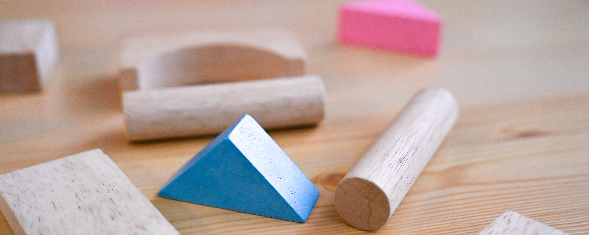

Incorporating Technology in Teaching

Description
of
Competency
Incorporating
different technology
in my classroom
can aid in
making
my
teaching
more
effective
and
my
classroom
more
inclusive.
Whether being
used
in
a
hybrid
or
online
course
or
a
traditional
in
person
lecture,
using
the
tools
available
to
better
present
and
assess
knowledge
is
critical
for
creating
an
optimal
teaching
environment.
One tool I plan to use is pre class assignments. These will be
administered
online prior
to class as a
way of giving
students
a
preview
of
what
we
will
cover
during
the
lesson. They
will
consists
of
a
short
reading online or a video to watch prior to class. Students then are required to post one question they had about the reading or video. The purpose of this assignment is to get students thinking about the material prior to class. In the class room I use I-clicker questions during the lecture to keep students engaged and to check for understanding. If a large portion of the class does not respond correctly this lets me know that I need to spend more time on that topic. Giving students anonymity allows them to answer questions without fear of being incorrect allowing more students to participate. During group work students will work on problems together and use whiteboards to share ideas and organize information. This makes problem solving more communal and easily allows students to adjust their approach or correct mistakes. Using backwards design makes it easier to create a lesson using technology. In order to have engaging activities I need a more structured format for my lesson planning so that I can come to class with a cohesive message and goal.
Artifacts
and
Materials
Developed
CCTI 2025 Slides